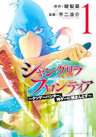

shangri-la frontier
The story is set in the near future, where games that use old-fashioned display screens are classified as retro games, while full-dive VR games have become commonplace. As a result of these games becoming mainstream, there exist many so-called "trash games": rushed, full of glitches, faulty games, the systems of which have not kept up with the improved visual technology. Rakuro Hizutome is a "trash game hunter", a great admirer of these usually shameful games, which he plays with the nickname Sunraku, until he is able to master them regardless of the difficulty due to their glitches. Rakuro has cleared the oversized "Faeria Chronicle Online" trash game, and is suffering a sort of burnout syndrome. At the suggestion of the owner of his favorite game store, "RockRoll", he buys the best-selling and excellent "Shangri-La Frontier", a full-dive VR game with 30 million registered players. He enters the world of Shangri-La Frontier as Sunraku, his bird-masked player character, where all the skills he has attained as an expert trash game hunter will come in handy as he progresses in the game.